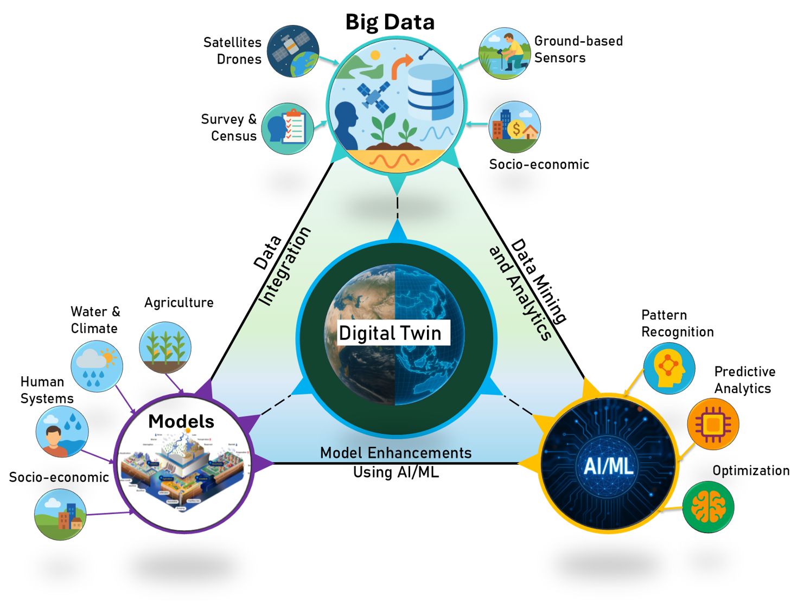

Climate Resilience and Environmental Sustainability in the Asian Water Tower (CREST)
A Digital Twin Initiative Toward an NSF Science and Technology Center
Michigan State University
About
Team
Vision and Mission
Research thrusts
News and media
Contact us
CREST Technology: The Digital Twin
1
: Addressing the Water-Energy-Food (WEF) Nexus Challenge by Integrating Data, Models, and AI/ML.
2
: Enhancing Disaster Risk Management.
3
: Developing spinoff tools.
